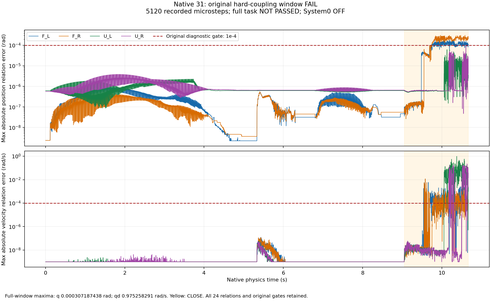
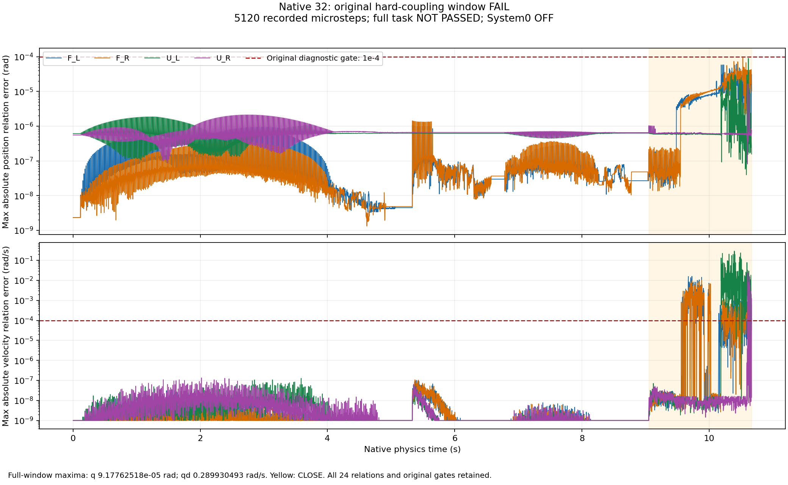
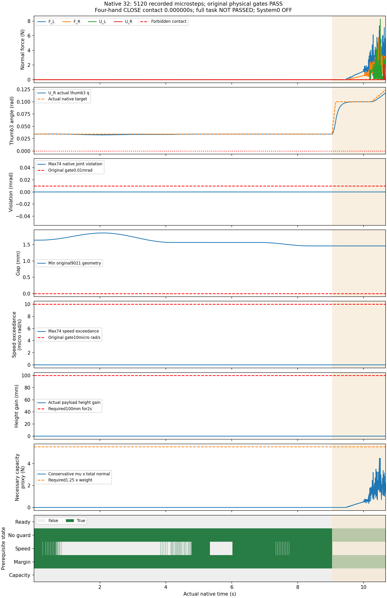
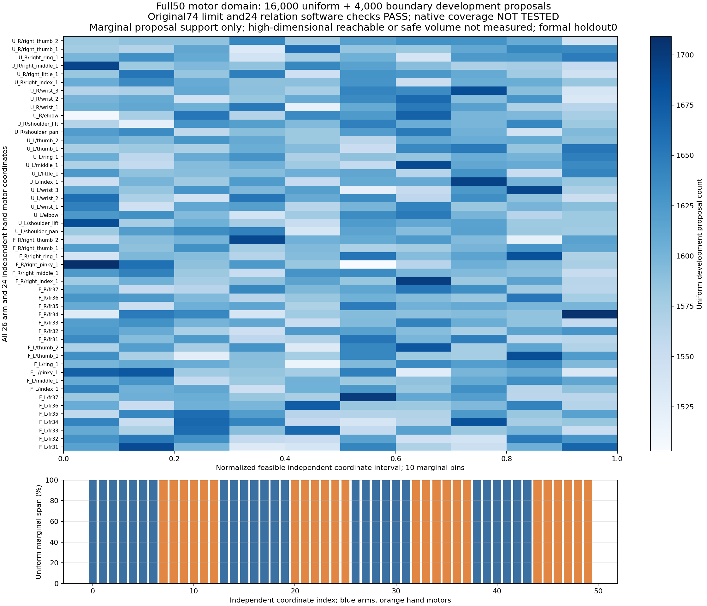

完整 System 0 安全验收未通过。本页夹持对照V31/V32均为已知case23的开发试验，System0和学习策略关闭，正式独立留出为0。当前2FR3/F2＋2UR5/DFX实验配置；标准2FR3＋2JAKA Zu7＋4RH56F2尚未推广。本页版本号指夹持序列，与其他独立实验序列同号试验分开核对。
V31保持原控制器，将四个原生关节系统的速度求解迭代从1增至128；原联动门槛仍失败。V32保持同样的128位置/128速度迭代，关闭24个独立手指电机的原生位置驱动，按每个物理步计算稳定的电机力矩。软件名义K=5、D=0.5，惯量估算来自此前1280个固定臂观测，只用于控制计算，没有修改物理质量或惯量。全部24从动关节位置驱动及用户力矩保持为0；重力先按原XML关系映射，再与电机力矩相加并使用原力矩上限。
固定控制周期0.016666秒，每周期8个物理步；手臂FIFO仍6控制周期。视频覆盖全部已记录窗口，末帧显示停留不增加物理测试时间。视锥检查只涵盖源几何，遮挡、完整可视网格及活动烘焙碰撞形状尚未验收。
| 版本 | 控制/物理步 | 物理门槛 | 位置误差rad | 速度误差rad/s | 原联动门槛 | 高度增量mm |
|---|---|---|---|---|---|---|
| 夹持V31 | 640/5120 | 通过本窗口 | 0.000307187438 | 0.975258291 | 失败 | 0.579357 |
| 夹持V32 | 640/5120 | 通过本窗口 | 9.17762518e-05 | 0.289930493 | 失败 | 0.00393391 |
原24条联动关系逐物理步检查，位置与速度阈值均为0.0001；所有原物理门槛保留。配置差异检查和控制器复算通过，不代表模型或任务通过。两次实际接触和反馈命令可不同，不能当作学习System0同输入配对实验。比较CSV · 完整数值 · 逐步位置、速度、实际目标、力矩和原限幅独立复算 · 质量惯量与原标准不变的原生核对



新增20,000个开发提案：16,000个均匀样本和4,000个近限位/反向目标样本，包含26个臂关节及24个独立手指电机，映射为全部48手指坐标和74关节状态。速度按全部从动关系和原生速度上限共同限制。全部原24关系、74限位与50电机绑定已独立软件核对；均匀样本每个坐标的10个边际分箱均有样本，最窄边际跨度超过99.95%。
这些是开发输入，不是原生安全实验。其原生运行0，几何碰撞拒绝率、可达性和高维安全体积未测；物体布局、故障和正式留出仍待补齐。旧原生随机集的手指起始状态仍固定，不能把新提案覆盖率写成已验证的操作空间覆盖率。

完整50电机可行区间及速度范围 · 20,000提案独立原XML和原生限位复算 · 全部提案、初速和目标，无结果后筛选
以下是20,000个提案中实际原生刚体安装点的坐标投影范围，单位米。源模型已对第31次全部5120步、54个手部刚体安装点重新绑定，最大位置差1.055微米。提案的碰撞、姿态可用性、抓取可达性和安全体积未验证；安装点范围不能当作无碰撞工作空间或共同抓取区域。
| 手臂/原生安装刚体 | x范围 | y范围 | z范围 |
|---|---|---|---|
| F_L / left_hand_base | -0.112 … 1.603 | -1.356 … 0.375 | 0.459 … 1.999 |
| F_R / right_hand_base | -0.115 … 1.604 | -0.382 … 1.357 | 0.472 … 1.996 |
| U_L / wrist_3_link | -1.680 … 0.177 | -0.512 … 1.362 | -0.039 … 1.825 |
| U_R / wrist_3_link | -1.668 … 0.180 | -1.371 … 0.485 | -0.049 … 1.827 |
完整四手任务必须实际完成100mm/2秒稳定抬升、搬运、放置、真实释放与撤离。随后需要同输入raw/学习System0开关对照、选择性暂停、未受威胁臂继续、恢复与零违规，并在候选机制冻结后运行至少两批独立正式新种子，每批每方法128条、960控制周期。软件检查与已知前缀不计入正式数量。
| 要求 | 状态 | 最新证据 | 待达标 |
|---|---|---|---|
| 回退保持在原始非零速度和延迟下持续安全 | DEVELOPMENT_LONG128_PASS_FORMAL_PENDING | 128条×480周期开发集保持通过；仍非有效操作，正式独立960周期未验收 | 独立冻结多种子与运行时未来安全/制动认证 |
| 保留操作意图并有实际四臂运动 | FAIL | v4安全123/128且四臂指令运动66/128；v5安全116/128且运动128/128。分层路径90%门槛仍失败 | 漏检碰撞和FIFO到达/未来保持；选择性暂停、恢复及任务完成 |
| 强随机、大范围操作空间与定向危害覆盖 | PARTIAL_CONDITIONAL_DEVELOPMENT | 20,000个新开发提案覆盖26臂关节+24独立手指电机，映射48手指坐标；16,000均匀+4,000边界，原74限位/24关系软件校验通过。未运行其原生轨迹，不能替代旧固定手指开发集 | 实际原生手指/全50电机联合随机轨迹、几何拒绝率、对象布局和故障分层；至少两批独立正式960周期 |
| 科学规范的冻结协议、独立多种子、留出与不确定性报告 | NOT_ACCEPTED | 当前全部为已知开发样本；正式独立留出验收0 | 候选修复后冻结至少两套独立新种子；保留所有失败，报告最坏种子 |
| 物体位置、姿态、大小、速度、可达性进入明确规划与安全输入 | FAIL | V32原联动窗口失败：q=9.17762518e-05rad，v=0.289930493rad/s；质量惯量及碰撞几何未改 | 完整受载模型、真实感知与陈旧状态故障、活动烘焙形状认证、标准资产推广 |
| 真实物理夹持、抬升、搬运、放置和释放 | FAIL | V32记录5120物理步，本窗口物理通过，最大高度增量0.00393391mm；完整任务未通过 | 完整真实夹持、100mm/2s抬升、搬运、放置、真实释放和撤离全部联合通过 |
| 真实四臂共同任务且有安全与不安全的同输入对照 | FAIL | 四手同梁真实摩擦记录完整；12秒CLOSE未满足抬升准备条件；System0与学习策略均关闭 | 完整协作成功及同输入System0开关配对 |
| 完整原生观测和独立危害判据，无漏测或单看画面 | PASS_RECORDED_BOUNDED_CASES_WITH_LIMITS | V31/V32每个物理步原74关节/9021几何/82点接触侧车公开；V32另外保留并独立复算逐步电机位置速度目标力矩 | 活动烘焙形状、延迟到达/负载预测、正式广域随机与视觉输入完整验收 |
| 网页可审阅的安全对照、完整视角和证据归档 | PARTIAL_SAFE_TASK_COMPARISON_NOT_ACCEPTED | V31/V32俯视、正视、侧视和全景窗口；全部MP4/VP9真实时序校验，保留失败及原阈值 | 真实成功协作与学习System0同输入开关对照；遮挡及全部可视网格验收 |
9项验收矩阵 · V31全部物理步与四路视频索引 · V32全部物理步、控制器输入与四路视频索引 · V31最坏反例与源关节角度复核 · 被拒绝的替代引用基：条件数更差 · 此前7项模型诊断与完整V29/V30视频 · 此前完整21.08秒任务失败记录